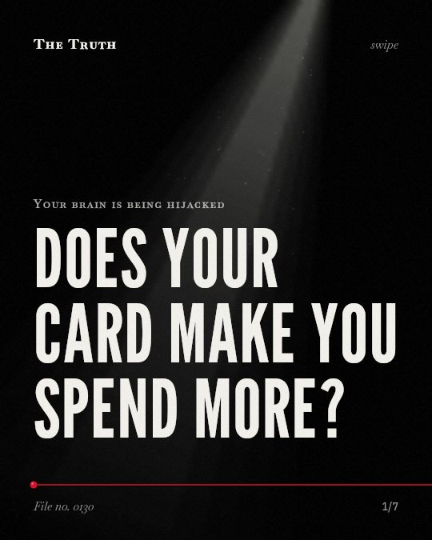

Your brain is being hijacked
Does your card make you spend more?

The cashless effect is not a constant.
The impact of card payments on spending varies depending on the economic cycle and the type of goods you purchase.
Established. Several studies combined, or official data. The evidence backs this.
What the research found
The cashless effect is linked to the business cycle, being stronger in periods of economic growth.
“The results also reveal that the business cycle impacts the cashless effect, with it being stronger in periods of economic growth.”
Meta-analysis, 2024. Schomburgk et al., Journal of Retailing.
The cashless effect is stronger in conspicuous consumption situations, while it is weaker in pro-social consumption situations.
“Specifically, the cashless effect is stronger in conspicuous consumption situations, while it is weaker in pro-social consumption situations.”
Meta-analysis, 2024. Schomburgk et al., Journal of Retailing.
The cashless effect has generally weakened over time.
“Finally, the cashless effect has generally weakened over time.”
Meta-analysis, 2024. Schomburgk et al., Journal of Retailing.
Over 40 years of research links cashless payment methods to increased consumer spending.
“Over 40 years of research links cashless payment methods to increased consumer spending.”
Meta-analysis, 2024. Schomburgk et al., Journal of Retailing.
Spending patterns change with the context.
Research shows that card payments lead to higher spending during economic growth and in situations of conspicuous consumption. This effect is weaker for pro-social spending.
The method of payment is not a fixed rule.
That may be why your spending habits feel inconsistent. The influence of your card may weaken over time or change based on what you are buying.
This part is our reading of the evidence, not a finding.
A quiet evening at a high-end store.
You browse the shelves and tap your card for a luxury item. The purchase feels effortless, but the method of payment may be influencing the amount spent.
The honest summary
The evidence confirms a significant but declining cashless effect that depends heavily on the context of the purchase.
The research shows that the cashless effect is not uniform and is influenced by external factors like the business cycle and the nature of the consumption.
What drives your next purchase?
Sources
- Lachlan Schomburgk, Alex Belli, Arvid O. I. Hoffmann (2024). Less cash, more splash? A meta-analysis on the cashless effect. Journal of Retailing. Meta-analysis, cited 25 times.
Also read for this file, not quoted
- Vaessen et al. (2014). The Effects of Microcredit on Women's Control over Household Spending in Developing Countries: A Systematic Review and Meta-analysis.
- Bergmann et al. (2023). Continuance intention in financial technology: a framework and meta-analysis.
- Devereaux (2004). Payments for care at private for-profit and private not-for-profit hospitals: a systematic review and meta-analysis.
- Vries et al. (2021). A Scoping Review of Alternative Payment Models in Maternity Care: Insights in Key Design Elements and Effects on Health and Spending.
- Ostad-Ahmadi et al. (2025). Effects of different payment methods on perinatal care outcomes: a systematic review.
This file was researched and drafted by software, then checked by rules a model cannot talk its way around: each quote above was matched word for word against the paper, and every number had to appear in it. How files are made.